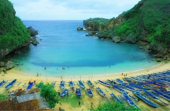
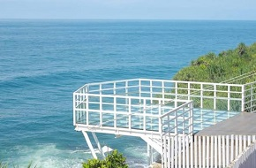

Pantai Gesing Wonosari berada di di dusun Panjolo Mulyo, Desa Girikarto, Kecamatan Panggang, Gunung Kidul. Pantai ini mempunyai karakteristik pasir putih dengan ombak yang kecil karena bentuknya berada di teluk dengan gradasi permukaan air dari warna hijau terang ke biru-biruan dengan diapit oleh tebing sehingga menambah keindahan pantai gesing ini, sangat cocok sebagai tempat wisata untuk bermain dan berlibur.
Alamat : Girikarto, Panggang, Bolang, Girikarto, Panggang, Kabupaten Gunung Kidul, Daerah Istimewa Yogyakarta 55133
Jam Buka : 24 Jam
Tiket : Rp. 5000

Pantai Ngrenehan
Pantai Ngrenehan
Wisata Yogyakarta
Pantai Ngrenehan – Berbicara mengenai Gunung Kidul memang tidak akan pernah ada habisnya. Ada saja keindahan dan pesona yang dihadirkan. Tidak hanya mengenai sajian kulinernya melainkan, alamnya yang benar-benar elok nan esoktis. Sama seperti halnya, Pantai Ngrenehan yang berada di Saptosari..
Alamat :Pantai Ngrenehan terletak di Desa Kanogoro, Saptosari, Kabupaten Gunung Kidul, Daerah Istimewa Yogyakarta.
Jam Buka : 06.00 - 17.00
Tiket : Rp. 10000
Pantai Watu Lumbung
Pantai Watu Lumbung
Wisata Yogyakarta
Wisata di Gunung Kidul memang tak pernah ada habisnya. Tak bisa dipungkiri Gunung Kidul seolah menjadi surga bagi pecinta wisata pantai. Bila selama ini Anda hanya mengenal Pantai Parangtritis kali ini cobalah untuk menjelajah lebih dalam beberapa pantai yang tersebar di Gunung Kidul. Satu lagi keindahan pantai tengah menjadi buah bibir dan wajib dikunjungi yaitu Pantai Watu Lumbung.
Alamat :Area Hutan, Balong, Girisubo, Kabupaten Gunung Kidul, Daerah Istimewa Yogyakarta 55883
Jam Buka : 06.00 - 19.00
Tiket : Rp. 5000

Pantai Teras Kaca
Pantai Teras Kaca
Wisata Yogyakarta
Pantai teras kaca ini memiliki pemandangan yang tak kalah cantik dengan wisata alam lain di gunung kidul. saat berkunjung ke pantai ini, maka kalian akan langsung disambut dengan panorama alam yang cantik, serta suasana yang nyaman dan udara sejuk menjadi nilai plus dari pantai ini
Alamat :di Dusun Bolang, Desa Girikarto, Kecamatan Panggang, Kabupaten Gunung Kidul, Daerah Istimewa Yogyakarta, 55872
Jam Buka : 09.00 - 17.00
Tiket : Rp. 10000